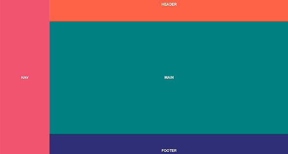
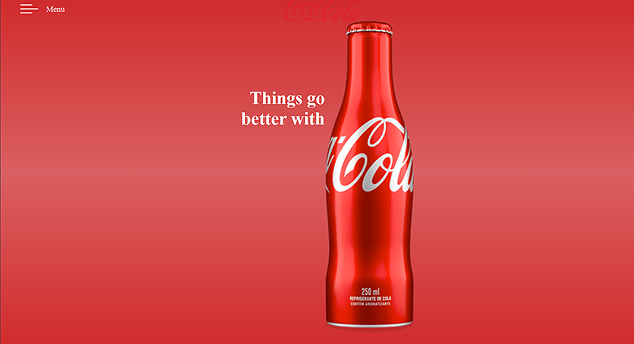
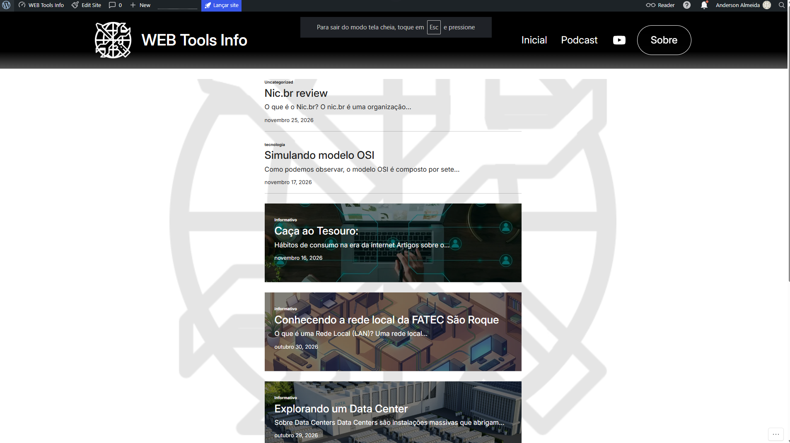
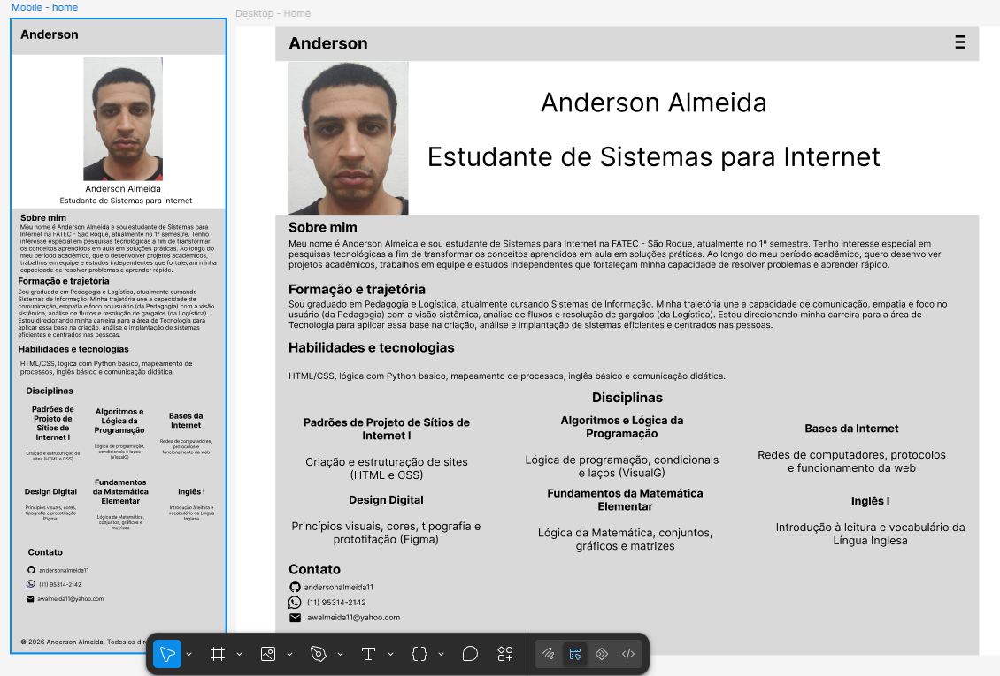
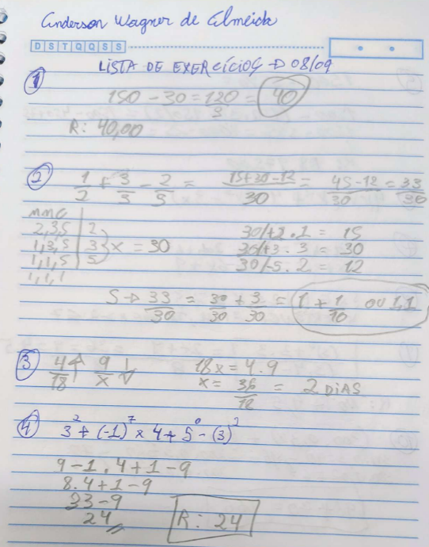
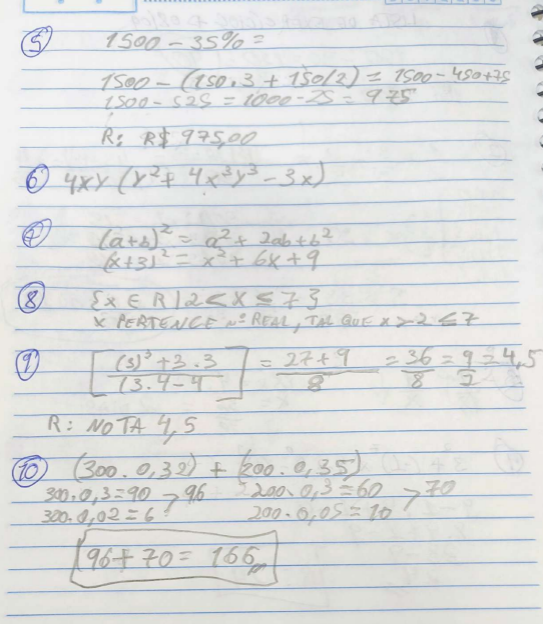
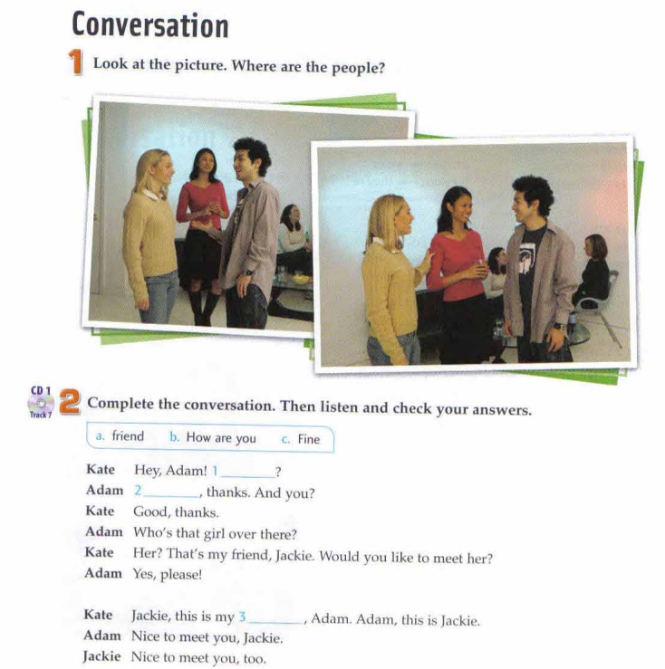
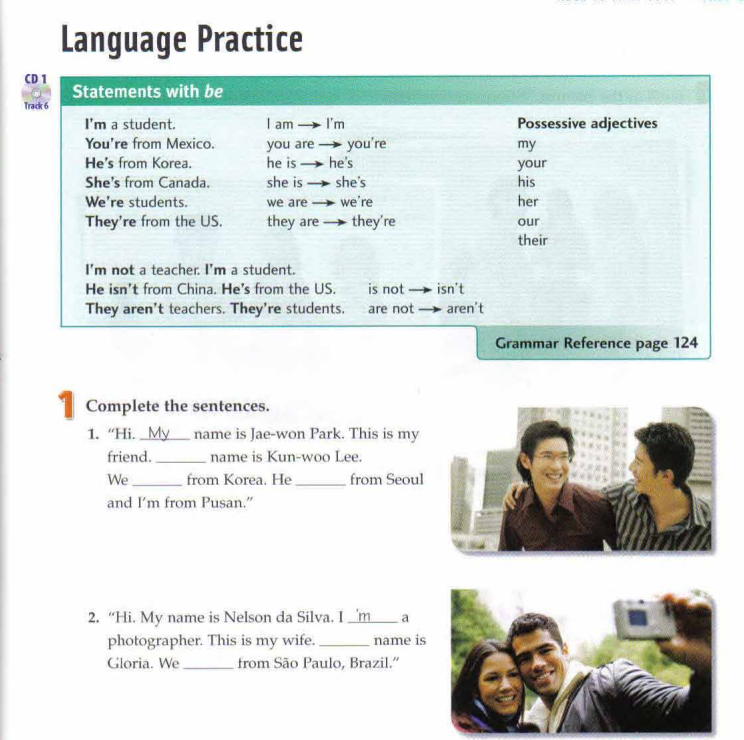

Anderson Almeida
Estudante de Sistemas para Internet
Padrões de Projeto de Sítios de Internet I
Desenvolvimento de páginas web com HTML5 e CSS3, passando pela estruturação semântica, organização de layout responsivo (mobile-first), versionamento com Git e publicação no GitHub Pages. As imagens abaixo mostram a evolução prática do início dos estudos até a construção deste portfólio.


Algoritmos e Lógica da Programação
Estudo da lógica de programação com foco em resolução de problemas, partindo da construção de algoritmos no VisualG (variáveis, estruturas condicionais e laços de repetição) até a introdução à linguagem Python.
Visualizar conteúdo do semestreBases da Internet
Compreensão do funcionamento da web, redes de computadores, protocolos e ferramentas digitais. Como aplicação prática dos conteúdos vistos ao longo do semestre, chegamos ao ponto de estruturar um blog no WordPress reunindo as atividades da disciplina.
https://webtoolsinfo.wordpress.com/
Design Digital
Introdução aos princípios visuais, psicologia das cores e prototipação de interfaces responsivas no Figma. A disciplina foi fundamental na prática para planejar o layout mobile e desktop que deu base para a criação deste portfólio.

Fundamentos da Matemática Elementar
Revisão e aplicação dos fundamentos matemáticos para a área de tecnologia, abrangendo teoria dos conjuntos, equações, exponenciação e radiciação, leitura e construção de gráficos e operações com matrizes.


Inglês I
Desenvolvimento de base em Língua Inglesa com foco no verbo to be, pronomes, práticas de leitura e dinâmicas de conversação aplicadas aos temas trabalhados em aula.

